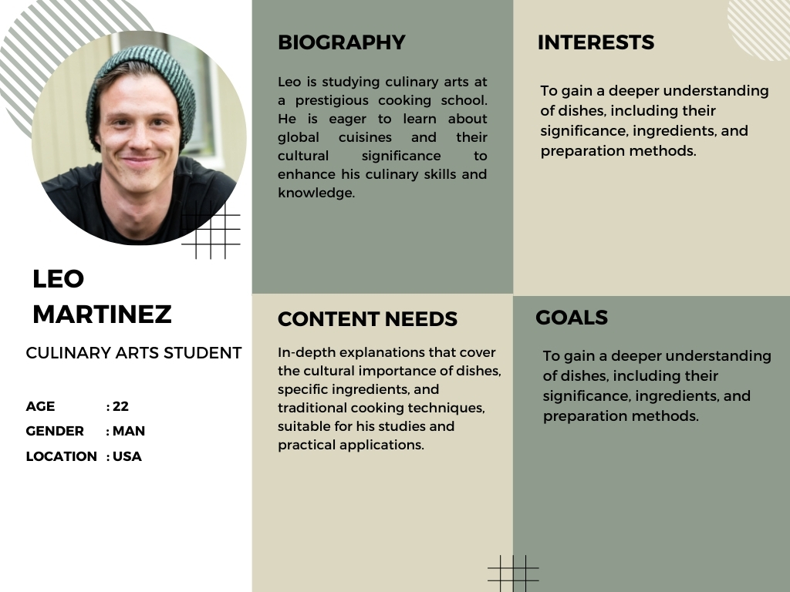
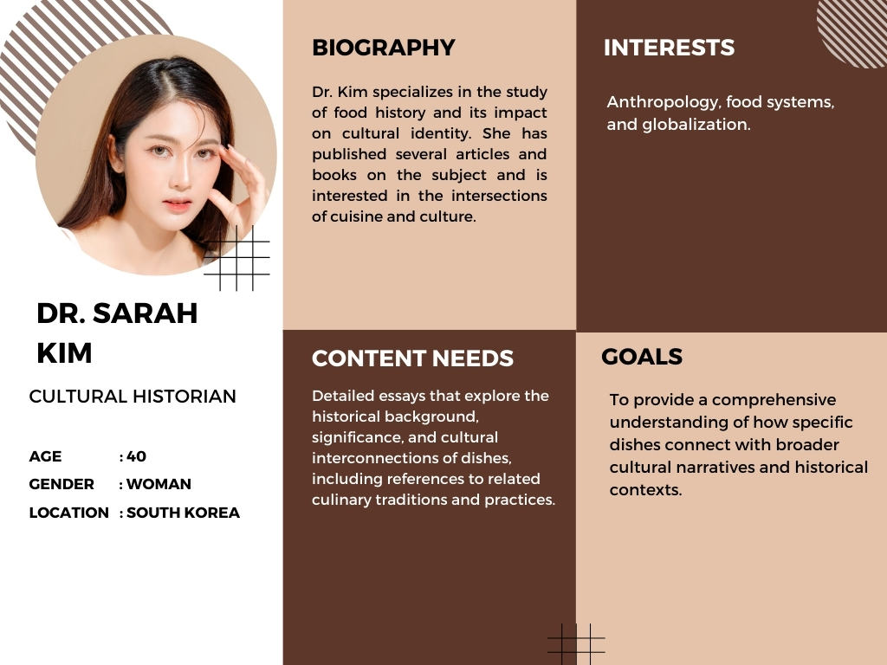
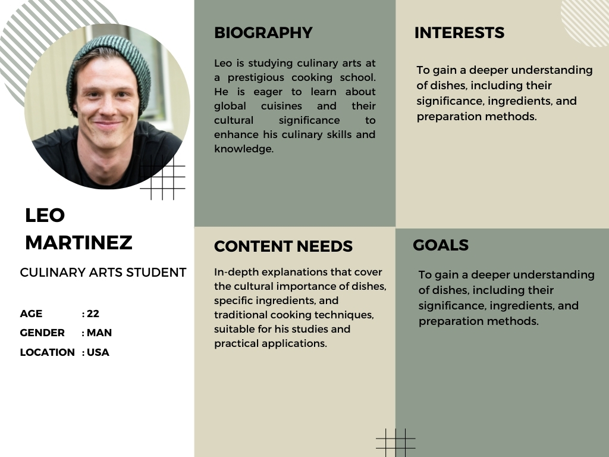
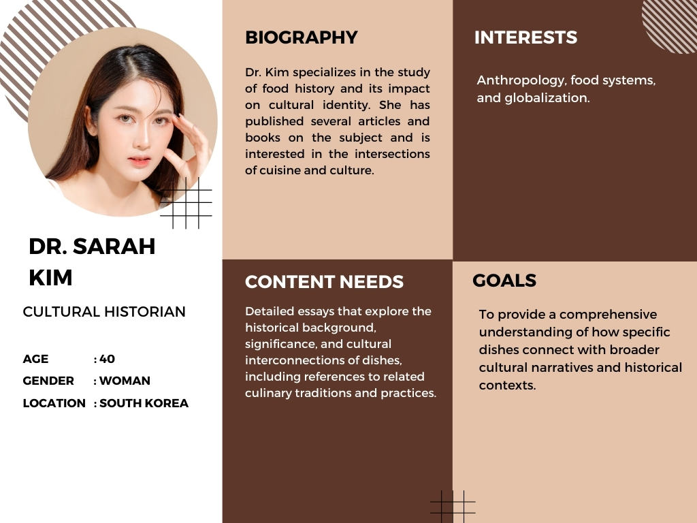

Documentation
1. Introduction
1.1 Overview
The Asian Food Museum project is a digital platform dedicated to showcasing the rich and diverse culinary heritage of Asia. This museum aims to educate visitors about the historical, cultural, and regional significance of various Asian cuisines while offering an engaging and interactive experience. Through this online platform, users can explore different traditional dishes, their origins, ingredients, preparation methods, and cultural significance. The museum serves as a bridge between cultures, allowing food enthusiasts, researchers, and culinary professionals to gain deeper insights into Asian gastronomy. By integrating high-quality visuals, informative content, and interactive elements, the Asian Food Museum ensures an immersive and educational experience for users worldwide.
1.2 Objective
The primary objective of the Asian Food Museum is to create an informative and engaging digital repository of Asian cuisine. The project seeks to:
- Preserve and promote the culinary traditions of various Asian cultures.
- Educate visitors about the historical and cultural contexts of traditional Asian dishes.
- Provide an interactive experience through multimedia content such as images, and virtual tours.
- Foster appreciation and understanding of different Asian food cultures among a global audience.
- Offer a user-friendly interface that facilitates easy navigation and access to food-related information.
1.3 Website Features
The Asian Food Museum website is designed to provide an engaging and seamless user experience. The key features include:
- Home Page
- A visually appealing landing page showcasing featured dishes and cultural highlights.
- Quick access to different sections of the website.
- Cultural Food Galleries
- Categorized displays of food from different Asian regions.
- High-quality images and descriptions of traditional dishes.
- Dish Profiles
- Detailed pages for each dish, including history, ingredients, preparation methods, and cultural significance.
- Interactive Maps
- A geographical representation of various Asian cuisines, allowing users to explore dishes by country or region.
- Navigation
- Categorization based on cuisine type, region, and meal type.
1.4 Requirements
To ensure the successful implementation of the Asian Food Museum project, the following technical and functional requirements are essential:
- Technical Requirements
- A responsive website design that adapts to different screen sizes (desktop, tablet, mobile).
- A secure database for storing dish profiles, user data, and multimedia content.
- Integration with cloud services for hosting high-resolution images.
- SEO optimization to increase visibility and reach a broader audience.
- Cross-browser compatibility to ensure accessibility on all major web browsers.
- Functional Requirements
- A content management system (CMS) for easy updating and addition of new dishes.
- User authentication and profile management for community engagement.
- Interactive features such as virtual tours and multimedia integration.
- Social media integration for content sharing and wider outreach.
- Multi-language support to cater to a diverse audience.
2. The Museum Experience
2.1 Food Display
The Asian Food Museum offers an immersive journey through the diverse and rich culinary traditions of Asia. Our collection features iconic dishes from different regions, each representing unique cultural influences, cooking techniques, and historical significance. Visitors can explore a variety of foods, from savory stews and noodle dishes to delicate pastries and refreshing desserts. Each dish is carefully presented with detailed descriptions, ingredients, and historical backgrounds, allowing guests to engage with the food beyond taste.
2.2 Museum Map and Narrative Paths
To provide a structured and engaging experience, the museum is divided into four distinct narrative paths. Each path represents a different perspective on Asian cuisine, guiding visitors through thematic explorations of food culture.
Main Narrative Paths:
- Historical Journey: Discover the origins of Asian cuisine, tracing the evolution of ingredients, cooking techniques, and the impact of trade and cultural exchange on culinary traditions.
- Regional Exploration: A deep dive into the cuisines of different Asian regions, showcasing the distinct flavors and specialties of each country.
- Ingredient-Based Narrative: A thematic exploration of key ingredients used in Asian cuisine, such as rice, spices, seafood, and fermentation.
- Preparation Techniques: Experience the artistry of Asian cooking through the lens of traditional techniques like steaming, stir-frying, roasting, and fermenting.
2.3 Sub-Narrative and Items
Within each main narrative path, visitors can further refine their journey by selecting sub-narratives, each focusing on a specific aspect of the theme.
- Historical Journey Sub-Narratives:
- Ancient Asian Cuisine: Explore the earliest documented recipes and cooking methods from different regions.
- Trade and Influence: Understand how the Silk Road and spice trade shaped Asian culinary traditions.
- Modern Adaptations: See how Asian dishes have evolved in contemporary global cuisine.
- Regional Exploration Sub-Narratives:
- East Asian Cuisine: Featuring Japanese, Chinese, and Korean delicacies.
- South Asian Cuisine: : Highlighting Indian, Pakistani, Sri Lankan, and Bangladeshi specialties.
- Middle Eastern & West Asian Cuisine: Showcasing Persian, Turkish, and Central Asian flavors.
- Ingredient-Based Narrative Sub-Narratives:
- The Story of Rice: The staple grain and its role in Asian diets.
- Spices and Herbs: : The fragrant elements that define Asian flavors.
- Fermentation and Preservation: Techniques like pickling, miso-making, and kimchi fermentation.
- Seafood and Protein Sources: How different cultures incorporate seafood, poultry, and meats.
- Culinary Techniques Sub-Narratives:
- Steaming and Boiling: Dumplings, dim sum, and hot pots.
- Grilling and Roasting: Peking duck, satay, and yakitori.
- Stir-frying and Sautéing: The essence of wok-based cooking.
- Fermentation and Pickling: Exploring miso, kimchi, and soy sauce.
3. Research
3.1 Introduction
This chapter focuses on the research and design process behind the Asian Food Museum’s digital experience. Our goal is to create an engaging, user-friendly platform that allows visitors to explore and learn about Asian cuisine in an immersive way. To achieve this, we conducted thorough research on user needs, designed an intuitive information structure, and developed an interactive navigation system. First, we present the user personas—representations of different visitor types—helping us tailor the museum’s design to meet their expectations. Then, we outline the information architecture, detailing how content is structured and accessed throughout the website. These foundational elements guide the overall design and usability of the digital museum, ensuring a seamless and enriching experience for all users.
3.2 User Personas
To create a user-centered experience, we developed several personas that represent our target audience. These personas help us understand user needs, expectations, and behaviors, allowing us to design a more intuitive and engaging museum experience.
 



3.3 Information Architecture
The website’s information architecture is designed to ensure a seamless navigation experience. Users can explore different sections of the museum based on their interests. Below is the structured layout of the website:
4. Design
4.1 Color Scheme
The Food Museum follows a carefully chosen color scheme that aligns with both the food industry and the historical museum concept. Our design is built around three primary colors:
- Red (#772017)
- Yellow (#EEE5C8)
- Green (#9C9B84)
Each color was chosen with a specific meaning in mind, ensuring that the visual identity of the website is both engaging and historically relevant.
4.1.1 Red (#772017) – The Essence of Appetite & Passion
Red is one of the most powerful colors in the food industry because it is known to stimulate appetite and create a sense of excitement. This is why many restaurants and food brands incorporate red into their designs.
In the Food Museum of Asia, our red is a deep, earthy shade (#772017) rather than a bright red. This darker tone reflects the historical and cultural depth of the foods displayed in the museum. It represents:
- Spices like chili, paprika, and saffron, which have shaped Asian cuisine.
- Traditional cooking methods like roasting, grilling, and slow-cooking, which bring out deep red hues in many dishes.
- Warmth & passion associated with food culture and communal dining.
This darker red tone also contributes to the museum's vintage aesthetic, making the experience feel more historical rather than overly commercial.
4.1.2 Yellow (#EEE5C8) – The Symbol of Nourishment & Tradition
Yellow is commonly associated with happiness, warmth, and nourishment in the food industry. Many staple foods, such as rice, bread, and dairy, carry golden or yellow hues, making this color a universal symbol of food and sustenance.
Our chosen shade of yellow (#EEE5C8) is a soft, muted tone that reflects:
- Ancient grains & traditional foods like wheat, rice, and flatbreads, which are fundamental to Asian diets.
- Old parchment & manuscripts, evoking the feeling of historical food records and recipes.
- Balance & harmony, a key element in Asian culinary traditions.
Rather than using a bright, modern yellow, we opted for a muted yellow to match the museum’s antique feel, reinforcing the idea that the museum preserves the heritage of food throughout history.
4.1.3 Green (#9C9B84) – The Representation of Nature & Sustainability
Green is a critical color in the food industry because it represents freshness, organic ingredients, and sustainability. It is often linked to natural foods, vegetables, and herbs that form the foundation of Asian cuisine.
Our chosen green shade (#9C9B84) is a subdued, earthy green, symbolizing:
- Ancient agricultural practices that shaped food traditions in Asia.
- Herbs, tea, and natural ingredients commonly used in traditional medicine and cooking.
- The connection between food and nature, emphasizing sustainability and organic eating.
By choosing a darker, muted green, the color blends with the historical ambiance of the museum, making it feel timeless rather than overly modern.
Dark Theme for a Historical & Vintage Aesthetic
While many food-related designs use bright and vibrant colors, we intentionally darkened our primary colors to create a museum-like atmosphere. This was done to:
- Align with the historical theme – Since our museum is focused on food history, the color palette needed to reflect antiquity, tradition, and authenticity.
- Create a vintage, old-world feel – Muted and deep tones resemble aged paintings, old recipe books, and historical food artifacts, reinforcing the concept of a food museum.
- Ensure a harmonious blend – Darker shades of red, yellow, and green complement the website’s elegant typography, background textures, and historical imagery.
The result is a cohesive, warm, and immersive design that allows visitors to feel like they are stepping into a cultural archive of food history rather than just a modern website.
4.2 Typography
4.3 Layout and Components
4.3.1 Landing Page
The landing page serves as the welcoming gateway to the Food Museum of Asia, immersing visitors in the rich culinary history of the region. It features a hero section with a carefully chosen background image that visually represents the diversity and
vibrancy of Asian cuisine. This image sets the tone for the museum's purpose—showcasing the cultural and historical significance of food. At the center of this section, a welcome message introduces visitors to the museum, giving them
a brief insight into what they can explore. To encourage user engagement, a call-to-action button is prominently placed, inviting them to begin their journey through the museum’s exhibits.
For ease of navigation, the landing page includes a menu button, designed with three horizontal white stripes, commonly known as a hamburger menu icon. This simple yet recognizable icon ensures that visitors can quickly access
different sections of the museum from any page. The use of a high-contrast white color for the menu button makes it highly visible against the background, improving usability. The overall design of the landing page focuses on clarity,
engagement, and a seamless introduction to the museum, ensuring that both first-time and returning visitors can easily navigate the site and enjoy its content.
4.3.2 Narrative Section
The narrative section is a key component of the museum, organizing food items based on their geographical origins within Asia. This structure allows users to explore foods regionally, gaining insights into how geography has influenced cuisine, ingredients,
and culinary traditions. The section is designed with interactive buttons, each representing a different region, making navigation both intuitive and engaging. By clicking on these buttons, users can explore specific food items related
to that region, helping them discover the rich diversity of Asian cuisine. This approach not only provides historical knowledge but also makes the browsing experience more immersive and educational.
A key focus in this section is responsive design, ensuring that it adapts smoothly to different screen sizes. On smaller screens, the buttons are arranged dynamically to maintain usability and readability, providing an optimal
experience for mobile users. Additionally, the spacing between button rows has been fine-tuned, with a maximum gap of 16 pixels to prevent excessive white space while maintaining a clean layout. This careful attention to spacing enhances
the visual organization of the page, ensuring that users can navigate comfortably without unnecessary scrolling. The balance between content, space, and responsiveness ensures that the narrative section remains visually appealing across
all devices.
4.3.2 Item Pages
Each item page is structured to present detailed information about a specific food item, allowing visitors to delve into its historical and cultural significance. The top portion of the page prominently features the title and an image of the food, ensuring
that users can immediately recognize what they are exploring. Beneath the title, a short description provides an introductory overview, giving users a quick glimpse into the food’s significance before they choose to learn more. This
approach keeps the initial view simple and accessible, allowing visitors to engage with content at their own pace.
To enhance interactivity, each page includes a "Tell Me More" button, which, when clicked, reveals a longer and more detailed description about the item. This feature ensures that users are not overwhelmed with too much text at
once but can access deeper insights when they wish. Additionally, navigation buttons ("Next" and "Previous") allow visitors to move seamlessly between different food items, making exploration fluid and intuitive. Importantly, when
users navigate to the next or previous item, the "Tell Me More" button resets, ensuring that each new page begins with only the short description visible. This design decision maintains consistency and a structured flow, enhancing
the browsing experience.
4.3.2 Interactive Elements
Several interactive features have been implemented to ensure smooth and engaging user interactions across the museum’s website. One of these is the subcategory buttons, which allow visitors to filter food items efficiently. These buttons have been designed
with a responsive layout, ensuring that on smaller screens, they adjust dynamically to display two buttons per row. This arrangement optimizes space and prevents excessive scrolling, making the mobile experience just as seamless as
on larger screens. This flexibility ensures that users can quickly access different subcategories while maintaining a structured and aesthetically pleasing interface.
In addition, a floating "Back to Top" button has been added to improve navigation, appearing only when users scroll down. Positioned at the bottom-right corner, this button allows users to instantly return to the top of the page,
reducing the need for excessive scrolling. To further enhance engagement, hover effects have been incorporated into buttons and interactive elements. These effects cause buttons to subtly change color when hovered over, providing visual
feedback that improves usability. These small but significant details contribute to a more immersive experience, ensuring that users can navigate and interact with the museum website effortlessly.
4.4 Images & Multimedia Usage
This project offers an immersive digital experience showcasing the history and culture of Asian cuisine. The landing page features a hero section with a food-themed background image, a call-to-action button, and a hamburger menu for easy navigation. The narrative section categorizes food items by geographical regions, with responsive buttons ensuring a smooth browsing experience. Each item page presents a dish with a title, an illustration, and a short description, alongside a “Tell Me More” button that expands to reveal additional details. The images replicate the museum experience, where each dish is displayed on a table with its ingredients, just as visitors would see in a real exhibition. Navigation buttons allow users to browse seamlessly, resetting descriptions for clarity. To enhance performance and usability, the website implements lazy loading, ensuring faster load times. Subcategory buttons are responsive, displaying two per row on mobile screens. A floating "Back to Top" button simplifies navigation, while hover effects provide visual feedback. Handcrafted icons align with the museum’s theme, adding authenticity. The dark color palette was chosen to evoke a historical ambiance, reinforcing the connection between food heritage and tradition. Through thoughtful design and functionality, the museum delivers an engaging and educational experience, making the rich culinary history of Asia accessible to all.
4.5 Technologies Used
The Project is built using modern frontend technologies to ensure a seamless and interactive user experience. HTML5 provides the structural foundation of the website, organizing content efficiently. CSS3 is used for styling,
layout, and responsiveness, incorporating media queries to adapt the design across different screen sizes. The website’s color scheme, typography, and spacing are carefully implemented to enhance readability and maintain a cohesive
visual identity.
JavaScript (ES6) adds interactivity by managing item navigation, button interactions, and dynamic content loading. It retrieves food data from a JSON file, ensuring that each item page displays relevant information
without the need for manual updates. JavaScript also enables features such as the "Tell Me More" button, lazy loading for images, and smooth transitions between pages, optimizing performance while keeping the user engaged.
5. Development
The development of the Food Museum website focused on creating an interactive and responsive experience using HTML5, CSS3, and JavaScript (ES6), with structured data stored in JSON for dynamic content rendering. The site features narrative cards, expandable descriptions, and seamless navigation to explore food items by region. JavaScript manages dynamic updates, ensuring smooth transitions between items, while lazy loading optimizes performance. Challenges like JSON formatting and interactivity were addressed through debugging and optimization, ensuring a seamless user experience across devices.
5.1 Frontend Development
HTML
- Explain how semantic HTML5 was used to structure the pages efficiently.
- Mention how different sections like landing page, narrative section, and item pages were built.
CSS & Responsive Design
- Describe how CSS3 was used for layout, colors, and fonts.
- Explain the use of flexbox, grid, and media queries for responsiveness.
- Talk about animations and hover effects for better user experience.
JavaScript Functionality
- Explain how event listeners, DOM manipulation, and JSON fetching were used to create interactivity.
- Mention how buttons (e.g., "Tell Me More", "Next", "Previous") dynamically change content.
- Explain the lazy loading of images to optimize performance.
5.2 Data Handling & JSON Integration
- Explain how food items and descriptions are stored in a JSON file.
- Describe how JavaScript fetches and dynamically updates the HTML content.
- Mention error handling, such as checking for missing or incorrect JSON data.
5.3 Navigation & User Interaction
- Explain how the "Back to Top" button, subcategory buttons, and hover effects were implemented.
- Detail how clicking on a narrative card leads to item pages filtered by category.
- Describe how the "Tell Me More" button toggles descriptions dynamically.
Conclusion
The Food Museum website successfully brings the rich culinary heritage of Asia to life through an interactive and visually engaging platform. By combining structured content, responsive design, and dynamic functionality, users can explore traditional foods with ease. The integration of narrative storytelling, custom illustrations, and interactive elements enhances user engagement, while optimized performance techniques ensure a smooth experience. This project demonstrates the effective use of modern web technologies in creating an educational and immersive digital museum, preserving and sharing food history in an accessible way.